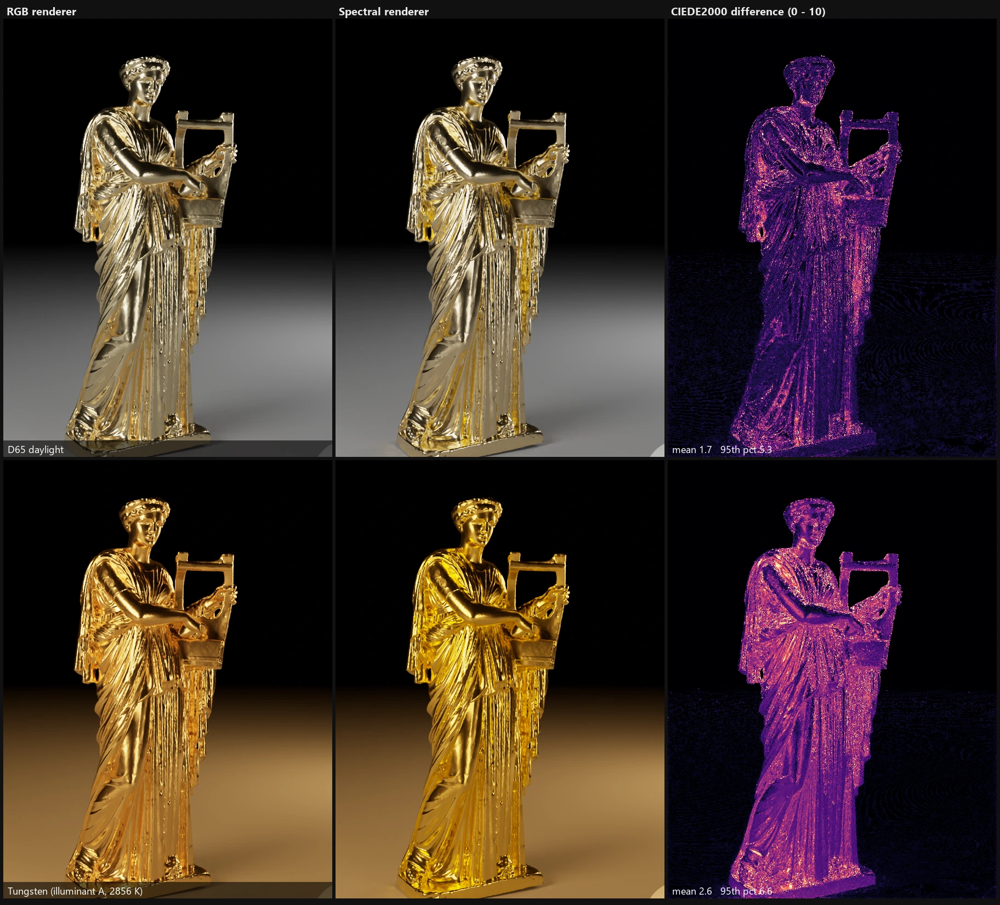

Model: Erato by Geoffrey Marchal (© 2016, CC BY 4.0). A 3D scan of a marble statue from Monte Calvo (2nd century AD, Ny Carlsberg Glyptotek collection). From Morgan McGuire's Computer Graphics Archive. Modifications: scaling and placement, recomputed vertex normals, gold material applied.
GoLD_rayt
A homemade 3D renderer that calculates light wavelength by wavelength, and sets the look of materials by number
A C++ program I started for my graduation research. I measured gold with a spectroradiometer and put into numbers how its color differs between calculating with the three colors of RGB and calculating wavelength by wavelength (spectral). I then repeated that study in my own code, and now I keep building toward pictures that look closer to how people see.
Refractive index, roughness, film thickness, melanin amount, the strength of the light at each wavelength and more are written as numbers. With the settings fixed, the same image can be made again and again. This makes it a tool for creating images to show in vision experiments.
- Drawing a gold statue with both methods gives an average color difference of 1.7 in daylight and 2.6 under an incandescent bulb (about 1 is visible, and 2 to 3 is clearly different). Under warm light, the RGB gold looks dull
- Comparing gold, copper and silver the same way, gold differs the most: up to 2.1 in daylight, growing to 12.7 after six reflections from metal to metal
- Material appearance from physical models: metals (including grooves and paint gloss), the rainbow colors of glass, the film of a soap bubble, translucency, skin (relief and wetness), hair, sea, fog and clouds
- Tests for each major part to check that it calculates correctly, with readability and reliability prioritized over speed